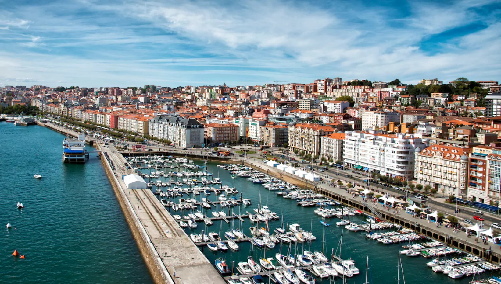
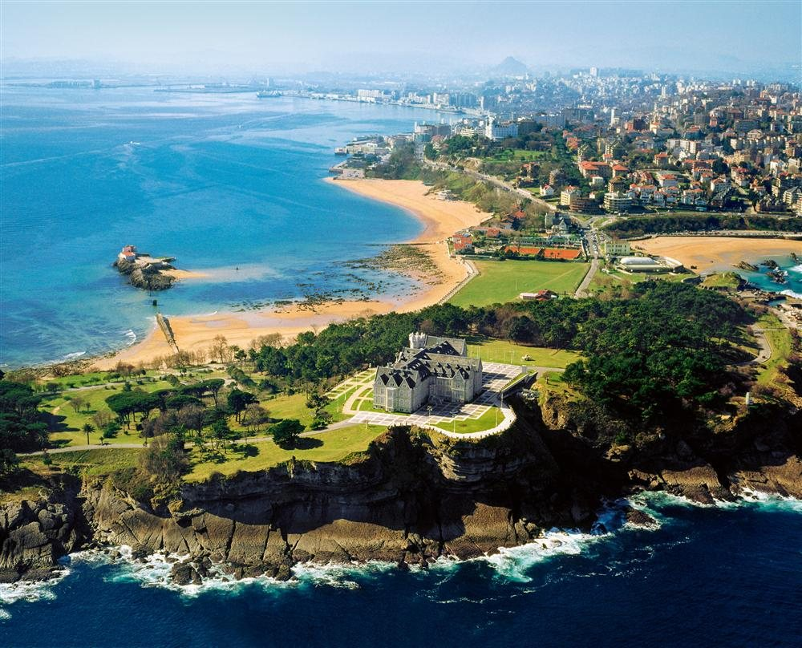
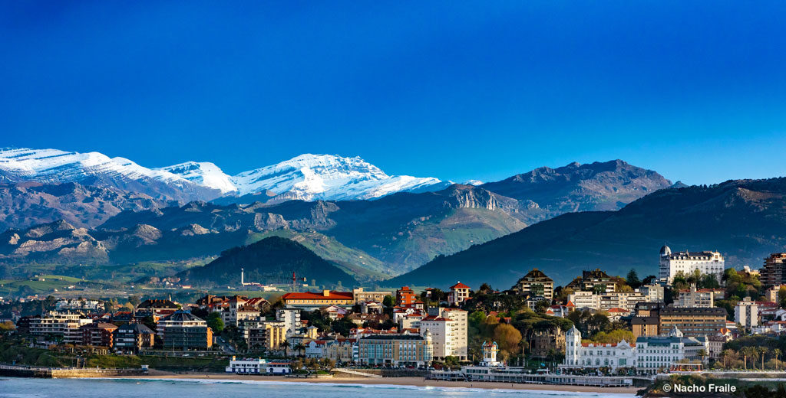

Santander es una ciudad situada en el norte de España, capital de la comunidad autónoma uniprovincial de Cantabria.3 Con 171 951 habitantes (2017),4 es la urbe más poblada de la comunidad autónoma. Además, es la cabecera del área metropolitana de Santander, una conurbación de más de 300 000 habitantes que se extiende alrededor de la bahía de Santander. Es la capital de provincia y también la capital de comunidad autónoma más septentrional de España y una de las ciudades más importantes del norte del país. El municipio limita al norte con el mar Cantábrico, al este con la bahía homónima, que lo rodea también por el sur junto al municipio de Camargo y al oeste limita con el municipio de Santa Cruz de Bezana. Su cota máxima, situada en Peñacastillo, es de 139 m s. n. m. y, su cota mínima se sitúa al nivel de mar.
Santander cuenta con un clima suave durante todo el año, lejos de los extremos climáticos de otras zonas de España. De acuerdo con la clasificación climática de Köppen, el clima de Santander es oceánico de tipo Csb. La oscilación térmica anual de las temperaturas medias mensuales es baja y alcanza unos 10 °C. La ciudad se sitúa en una de las zonas más lluviosas de toda España; las precipitaciones se distribuyen durante todo el año, aunque son más abundantes en primavera y otoño. La humedad es bastante elevada durante todo el año y llega a superar el 90% en algunas ocasiones. Las temperaturas son suaves durante todo el año y nunca se alcanzan episodios de frío extremo ni de calor extremo. Esta es la principal característica del clima oceánico del norte de España: los veranos son generalmente templados, con temperaturas agradables y normalmente sin los episodios de calor intenso presentes en gran parte de España, y los inviernos no son muy fríos debido al efecto termorregulador del mar, con temperaturas que rara vez descienden por debajo de los 0 °C y con un promedio de un día de nieve al año. En términos generales, las temperaturas medias están entre los 24,2 °C de máxima en agosto y los 5,7 °C de mínima en febrero.5 Durante los meses de otoño e invierno principalmente, pueden producirse episodios de viento fuerte del Sur que provocan altas temperaturas y humedades muy bajas. Este fenómeno se debe a la cercanía de barreras montañesas elevadas, la Cordillera Cantábrica, que producen el llamado Efecto Föhn.
Establecer el origen de los primeros asentamientos humanos en la actual Santander resulta complejo dados los pocos datos escritos y arqueológicos. Sin embargo, parece un lugar bastante adecuado el lado norte de la bahía; al abrigo de la misma y a salvo de los temporales del Cantábrico y los vientos, en la ladera norte del promontorio de Somorrostro y a orillas de la antigua ría de Becedo. Por otra parte, las aguas de la bahía, alimentadas por amplias rías que en ella desembocan desde el sur, sirven de fuente de alimentación para los allí asentados y la buena visibilidad desde el cerro para avistar los posibles atacantes hacen de este lugar idóneo para la fundación de un poblado estable, donde en definitiva evolucionó a lo largo de toda la Edad Media.9
